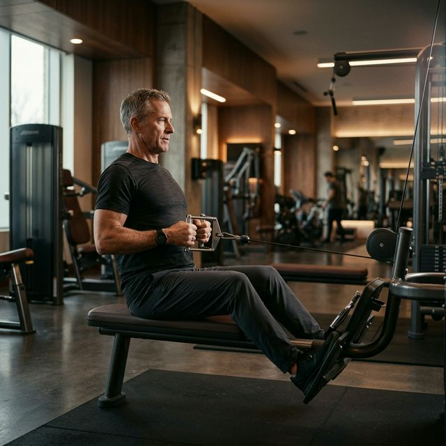
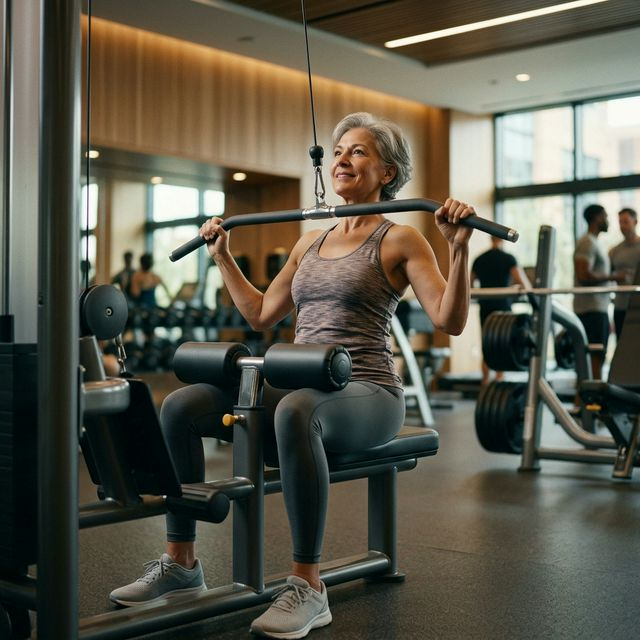
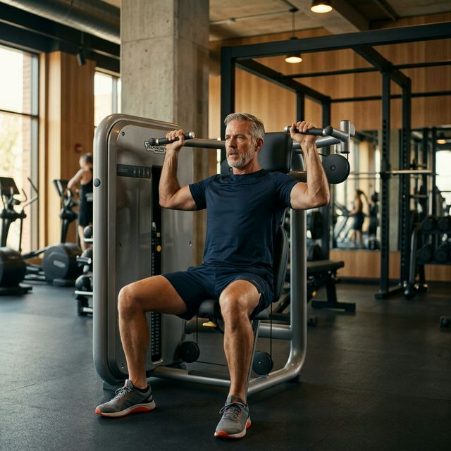
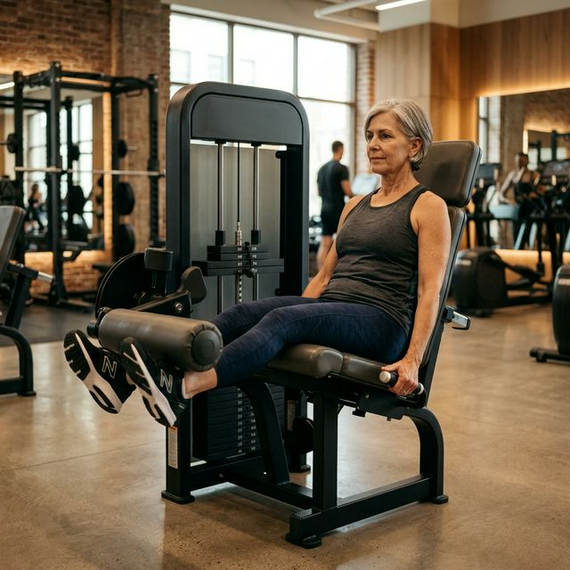
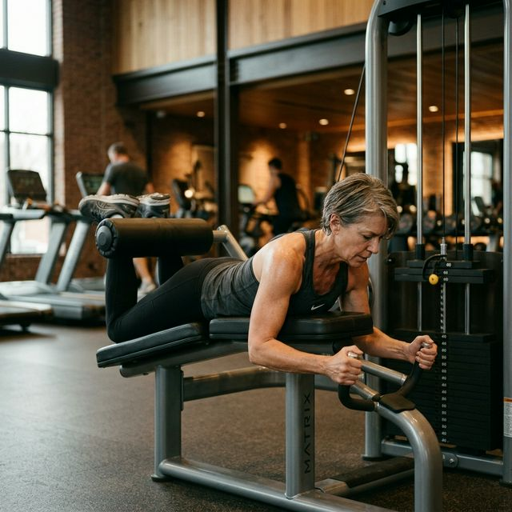
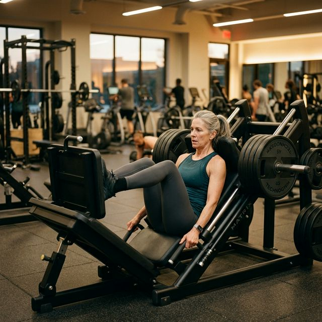
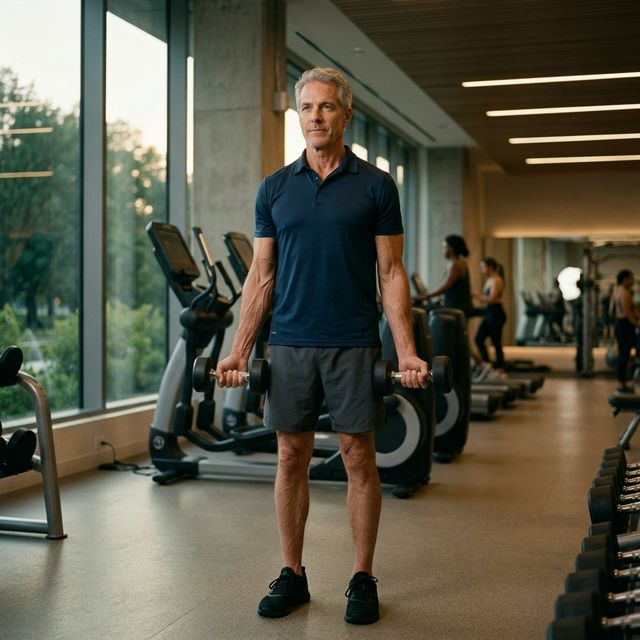
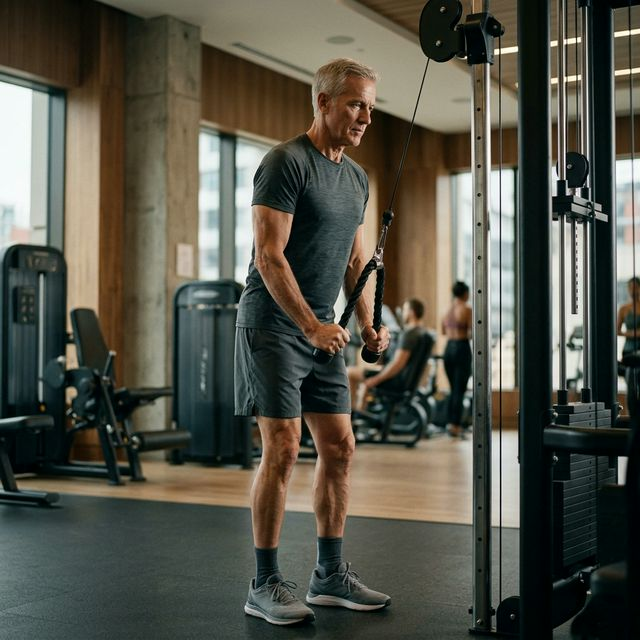
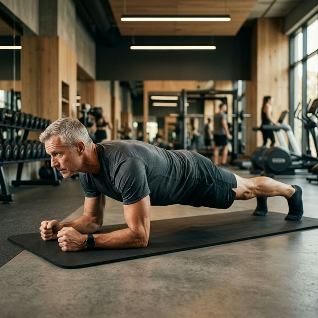

Nie teoria. Nie ogólniki. Konkretny plan na 30 dni — co robisz w poniedziałek, co w środę, co w piątek. Ile serii, jakie ćwiczenia, ile odpoczynku. Zaprojektowany specjalnie dla osoby po pięćdziesiątce, która zaczyna od zera lub wraca po długiej przerwie. Weź ten artykuł, wyświetl go na telefonie i idź na siłownię.
Dlaczego ten plan działa — i skąd się bierze
Ten plan nie powstał z powietrza. Oparty jest na najnowszych wytycznych Amerykańskiego Kolegium Medycyny Sportowej z 2026 roku oraz na dużych przeglądach badań obejmujących łącznie ponad 30 000 uczestników. Wniosek, który z tego płynie, jest prosty i zachęcający:
Phillips et al.: „Najlepszy program treningowy to ten, którego naprawdę będziesz się trzymać”.
Trzy sesje tygodniowo, całe ciało na każdej sesji, 2-3 serie na ćwiczenie, 10-12 powtórzeń, przerwy 90-120 sekund. Tyle wystarczy. Nie musisz spędzać na siłowni 2 godzin. Każda sesja w tym planie zajmie Ci 45-55 minut.
Badania na ponad 30 000 uczestnikach pokazują: nie program decyduje o efektach. Decyduje fakt, że przyszedłeś. Twoja siłownia czeka. Plan masz. Reszta jest w Twoich rękach.
Zanim wejdziesz — 5 rzeczy, które musisz wiedzieć
- Każda sesja zaczyna się od 5-7 minut rozgrzewki — marsz na bieżni lub rower w spokojnym tempie. Obowiązek, nie opcja.
- Ciężar dobierasz metodą prób i błędów. Zacznij lekko — tak lekko żebyś po 12 powtórzeniach pomyślał: mógłbym zrobić jeszcze 2-3. Technika ważniejsza niż ciężar.
- Powtórzenia wykonujesz powoli: 2 sekundy w dół (faza opuszczania), chwila zatrzymania, 2 sekundy w górę. Żadnych szarpnięć.
- Każdą sesję zakończ 5 minutami spokojnego rozciągania. Nogi, biodra, barki, szyja.
- Dwie butelki wody — litr minimum. Na siłowni jest cieplej niż myślisz i pocisz się bardziej.
Co zabrać na pierwszą sesję?
Ręcznik (często obowiązkowy), butelka wody (min. 1l), słuchawki z muzyką, wygodne buty treningowe (nie biegowe!), telefon z tym artykułem. Wydrukuj lub zapisz plan w notatniku. Niczego nie musisz pamiętać — wszystko jest tutaj.
Słowniczek ćwiczeń — co to jest i jak to wykonać
Zanim przejdziemy do planu — krótki opis każdego ćwiczenia. Przy każdym znajdziesz hasło do wyszukania na YouTube. Wpisz je w wyszukiwarkę i wybierz film z kanału o dużej liczbie wyświetleń — 90% z nich jest na poziomie Twoich potrzeb.
1. Wyciskanie na maszynie (klatka piersiowa)
Siedząc w maszynie, chwytasz uchwyty na wysokości klatki, wypychasz do przodu i wolno wracasz. Nie uciskasz klatki — łopatki ściągnięte do tyłu i w dół przez cały czas. Maszyna jest bezpieczniejsza od sztangi przy starcie.
2. Wioślarz na wyciągu siedzący (plecy)

Siedząc z wyprostowanymi plecami, chwytasz drążek i ciągniesz do brzucha — łokcie idą wzdłuż ciała do tyłu. Łopatki ściągasz razem w końcowej fazie ruchu. To jedno z najważniejszych ćwiczeń dla postawy.
3. Wyciąg górny (szerokie mięśnie pleców)

Siedząc pod drążkiem wyciągu, chwytasz szeroko, ciągniesz do wysokości klatki. Nie chwiej się do tyłu — ruch jest w ramionach i plecach, nie w tułowiu. Klatkę piersiową kierujesz ku drążkowi.
4. Wyciskanie na maszynie barki (ramiona)

Ustawienie siedzenia tak, by uchwyty były na wysokości barków. Wypychasz prosto w górę — nie blokuj łokci na szczycie. Ręce nie są do końca wyprostowane — miękkie łokcie na górze.
5. Prostowanie nóg na maszynie (mięsień czworogłowy uda)

Siedząc, wkładasz nogi pod wałek, prostujesz nogi w górę. Nie szarpiesz — płynny ruch w górę, powolny powrót. To nie krótkie szybkie kopnięcia, to kontrolowany ruch.
6. Uginanie nóg na maszynie (mięsień dwugłowy uda)

Leżysz na brzuchu lub siedzisz (zależnie od modelu), wkładasz nogi pod wałek, uginasz ku pośladkom. Balans z prostowaniem nóg — obie maszyny zawsze razem.
7. Prasa do nóg (pośladki, uda, łydki)

Siedząc z plecami opartymi, nogi ustawiasz na płycie na szerokość bioder. Pchasz płytę od siebie, wolno uginasz kolana z powrotem. Nie dociskaj kolan do klatki zbyt głęboko. To podstawowe ćwiczenie na nogi dla osób po 50-tce — bezpieczniejsze od przysiadu ze sztangą.
8. Uginanie rąk z hantlami (bicepsy)

Stoisz lub siedzisz, trzymasz hantle wzdłuż ciała. Uginasz w stawie łokciowym ku barkom, wolno opuszczasz. Łokcie nieruchome przy tułowiu — nie bujaj ciałem.
9. Prostowanie rąk na wyciągu (tricepsy)

Stoisz przy wyciągu, trzymasz linę lub drążek na wysokości klatki. Prostujesz ręce w dół, łokcie nieruchome przy tułowiu, wolny powrót.
10. Deska (plank) — stabilizacja

Leżysz na przedramionach i czubkach palców. Ciało proste jak deska — biodra nie opadają w dół, pupa nie idzie w górę. Utrzymujesz pozycję 20-30 sekund. Oddychasz normalnie. W pierwszym tygodniu wersja na kolanach jest całkowicie OK.
30-dniowy plan — tydzień po tygodniu
Trenujesz 3 razy w tygodniu. Dni treningowe: poniedziałek, środa, piątek. Między sesjami — co najmniej jeden dzień odpoczynku. To nie jest negocjowalne — mięśnie rosną podczas odpoczynku, nie podczas treningu.
Źródła: ACSM Position Stand 2026 oraz Fisher J. et al. Evidence-Based Resistance Training Recommendations, Medicina Sportiva 15(3):147–162, 2011.
TYDZIEŃ 1 i 2 — Nauka i oswajanie (sesje 1-6)
Cel tych dwóch tygodni: nauczyć się techniki, poznać maszyny i odkryć, jakie ciężary są dla Ciebie odpowiednie. Żadnego ego, żadnego "do odcięcia". To fundamentalne 2 tygodnie, które decydują o następnych 4.
| Ćwiczenie | Serie | Powt. | Odpoczynek | Film YT (szukaj) |
|---|---|---|---|---|
| Prasa do nóg | 2 serie | 12 powt. | 90 sek. | leg press tutorial |
| Wyciąg górny | 2 serie | 12 powt. | 90 sek. | lat pulldown form |
| Wyciskanie klatka (masz.) | 2 serie | 12 powt. | 90 sek. | chest press machine tutorial |
| Wioślarz na wyciągu | 2 serie | 12 powt. | 90 sek. | seated row form |
| Prostowanie nóg (masz.) | 2 serie | 12 powt. | 90 sek. | leg extension tutorial |
| Uginanie nóg (masz.) | 2 serie | 12 powt. | 90 sek. | leg curl machine form |
| Deska (plank) | 2 serie | 20 sek. | 60 sek. | plank form |
Jak dobrać ciężar w tygodniu 1
Zacznij od bardzo lekkiego obciążenia — pierwsza seria to test. Jeśli 12 powtórzeń było zbyt łatwe, w następnej serii dodaj trochę. Jeśli ciężko skończyłeś, zdejmij. Po końcu tygodnia powinieneś wiedzieć mniej więcej jaki ciężar jest Twój na każde ćwiczenie.
TYDZIEŃ 3 — Budowanie (sesje 7-9)
W tygodniu 3 zwiększamy liczbę serii z 2 do 3 i dodajemy 2 nowe ćwiczenia — na biceps i triceps. Ciężary z tygodnia 2 — jeśli skończyłeś 12 powtórzeń względnie łatwo, zwiększ o 5% (lub o 1 kg na hantlach).
| Ćwiczenie | Serie | Powt. | Odpoczynek | Film YT (szukaj) |
|---|---|---|---|---|
| Prasa do nóg | 3 serie | 12 powt. | 90 sek. | leg press tutorial |
| Wyciąg górny | 3 serie | 12 powt. | 90 sek. | lat pulldown form |
| Wyciskanie klatka (masz.) | 3 serie | 12 powt. | 90 sek. | chest press form |
| Wioślarz na wyciągu | 3 serie | 12 powt. | 90 sek. | seated row form |
| Uginanie rąk - bicepsy | 2 serie | 12 powt. | 60 sek. | bicep curl form |
| Prostowanie rąk - tricepsy | 2 serie | 12 powt. | 60 sek. | triceps pushdown tutorial |
| Deska (plank) | 3 serie | 25 sek. | 60 sek. | plank form |
TYDZIEŃ 4 — Progresja i konsolidacja (sesje 10-12)
Ostatni tydzień planu. Ciężary z tygodnia 3 — jeśli 3 serie po 12 były wykonalne, dodajemy trochę. Jeśli nie — trzymamy ten sam ciężar i pracujemy nad techniką. W tym tygodniu dodajemy też ćwiczenie na barki.
| Ćwiczenie | Serie | Powt. | Odpoczynek | Film YT (szukaj) |
|---|---|---|---|---|
| Prasa do nóg | 3 serie | 10-12 powt. | 90 sek. | leg press tutorial |
| Wyciąg górny | 3 serie | 10-12 powt. | 90 sek. | lat pulldown form |
| Wyciskanie klatka (masz.) | 3 serie | 10-12 powt. | 90 sek. | chest press machine |
| Wioślarz na wyciągu | 3 serie | 10-12 powt. | 90 sek. | seated cable row |
| Wyciskanie barki (masz.) | 3 serie | 12 powt. | 90 sek. | shoulder press machine |
| Prostowanie nóg (masz.) | 2 serie | 12 powt. | 90 sek. | leg extension form |
| Uginanie nóg (masz.) | 2 serie | 12 powt. | 90 sek. | leg curl machine |
| Uginanie rąk — biceps | 2 serie | 12 powt. | 60 sek. | dumbbell bicep curl |
| Prostowanie rąk — triceps | 2 serie | 12 powt. | 60 sek. | tricep pushdown cable |
| Deska (plank) | 3 serie | 30 sek. | 60 sek. | plank form |
Kiedy zwiększać ciężar — złota zasada
Zasada jest prosta i ma potwierdzenie naukowe: kiedy skończysz WSZYSTKIE serie z planowaną liczbą powtórzeń i masz poczucie, że mógłbyś zrobić jeszcze 2-3 — zwiększ ciężar o około 5% (lub o 1-2 kg na hantlach) na następnej sesji. Nie zwiększaj co sesję z musu. Zwiększaj, kiedy ciało jest gotowe. To się nazywa progresja — i jest jedyną drogą do silniejszego ciała.
Co się zmieniło po 30 dniach — i co dalej
Po czterech tygodniach regularnego treningu Twój układ nerwowy nauczył się aktywować właściwe mięśnie, poprawiła się koordynacja mięśniowa, a najgłębsze stabilizatory kolan i kręgosłupa zaczęły pracować. To tzw. efekt neuralny — dlatego siła w pierwszych tygodniach rośnie szybciej niż masa mięśniowa. Zresztą znacznie część efektów zdrowotnych (metabolizm, ciśnienie, nastrój, jakość snu) pojawia się już po 4-6 tygodniach regularnego treningu.
Źródła: ACSM oraz ACE Fitness — Weight Lifting Tempo & Sets.
Po 30 dniach możesz kontynuować ten plan przez kolejne 4 tygodnie zwiększając ciężary. Albo porozmawiaj z trenerem personalnym o programie split (oddzielne sesje dla różnych części ciała) — bo już będziesz wiedział czego chcesz i jak to działa. Ten plan dał Ci fundament. Reszta to budowanie na nim.
Podsumowanie planu jednym rzutem oka
| Tydzień | Sesje/tydz. | Ćwiczenia | Serie/ćw. | Cel |
|---|---|---|---|---|
| Tydzień 1–2 | 3× / tydzień | 7 ćwiczeń | 2 serie | Nauka techniki |
| Tydzień 3 | 3× / tydzień | 9 ćwiczeń | 2–3 serie | Budowanie siły |
| Tydzień 4 | 3× / tydzień | 10 ćwiczeń | 2–3 serie | Progresja |
30 dni. 12 sesji. Tyle wystarczy, żeby zmienić całe następne 30 lat. Nie złoty medal — zmiana sposobu działania. Wejdź na siłownię. Plan masz.
Źródła
- [1] ACSM Position Stand 2026 — Resistance Training for Healthy Adults: An Overview of Reviews, Medicine & Science in Sports & Exercise. PMC12965823. Synteza 137 przeglądów, n > 30 000.
- [2] ACSM Position Stand: Progression Models in Resistance Training for Healthy Adults. Med Sci Sports Exerc. 2009;41(3):687–708.
- [3] Fisher J., Steele J., Bruce-Low S., Smith D. Evidence-Based Resistance Training Recommendations. Medicina Sportiva 15(3):147–162, 2011.
- [4] ACE Fitness — McCall P. Weight Lifting Tempo & Sets: How to Select the Right Sets for Your Clients.
- [5] Back Nine Physical Therapy. Reps and Sets Guide: How to Train for Strength, Size, or Endurance.
- [6] ACSM — materiały i zasoby dotyczące resistance exercise for health.
- [7] Schoenfeld BJ et al. (2017). Dose-response relationship between weekly resistance training volume and increases in muscle mass. Journal of Sports Sciences. 35(11):1073–1082.